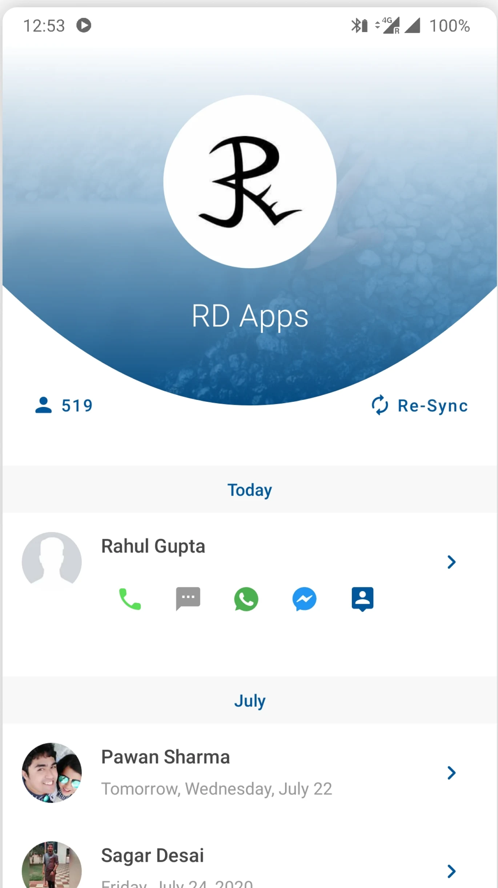

Home screen widget
Add the widget to your home screen and wish friends over WhatsApp, Messenger, SMS or a call without opening the app at all.
Android & Wear OS
Birthday Calendar syncs every birthday from your Facebook account and turns remembering into a single tap — wish over WhatsApp, SMS, Messenger, or just call. Your birthdays stay on your device.

Key features
Seven features that turn a birthday from a calendar entry into a message you actually send.
Add the widget to your home screen and wish friends over WhatsApp, Messenger, SMS or a call without opening the app at all.
Contacts are linked to birthdays automatically when the names match exactly. If they don't, link the contact manually from the profile screen.
No more digging through Facebook to find a birthday, then switching to WhatsApp. Call, SMS, Messenger or WhatsApp — right from the birthday.
A built-in app lock protects your account and your list of birthdays. Unlock with a PIN or with your fingerprint.
Stop typing the same long birthday wish over and over. Set your default message once and let the app handle the rest.
We all have a few people who matter most. Mark their birthdays as favourites and filter the home screen down to just them.
Install the app on your watch, pair it with your phone and every birthday syncs across — plus a tile for a quick look at today's list.
A dark theme for night owls, plus encrypted backups of your birthdays, settings and reminders you can restore on a new device.
How it works
Log in once and the app pulls in the birthdays from your account. No re-syncing by hand every time.
Contacts are matched to birthdays by name automatically. Anything that doesn't match can be linked by hand.
When the day arrives, tap the birthday and send your message over WhatsApp, Messenger, SMS or a call.
After the first sync the app runs without internet — your birthdays are stored locally on your device.
Screenshots
Tap any screenshot to open it larger.
Wear OS
Install Birthday Calendar on your wearable, pair it with your phone and every birthday syncs across automatically. A tile gives you a quick look at the birthdays for today without pulling out your phone.
Privacy
Birthday Calendar does not send your personal data out of your device. Your account's birthdays are stored locally, and the app declares no data collected and no data shared with third parties.
FAQ
Only to sync birthdays from your Facebook account the first time. After that the app runs entirely offline because your birthdays are stored on your device.
Contacts are matched by exact name. When a name on Facebook differs from the name in your contacts, you can link it manually from the profile screen.
WhatsApp needs both the contacts permission and a WhatsApp account registered for that number. Without one of those, use call or SMS instead.
A few launchers don't allow third-party widgets. On those launchers, open the app to see your birthdays instead.
Yes. Install Birthday Calendar on the wearable, pair it with your phone, and the birthdays sync across. Wear OS 3 and newer are supported.
No. The app stores your account's birthdays locally on your device and sends no personal data out of it. Backups are encrypted and kept on-device too.
Get Birthday Calendar for Android or Wear OS and start wishing in a single tap.
Free · No data collected · Available from the latest GitHub release
Also on Google Play (archived listing)